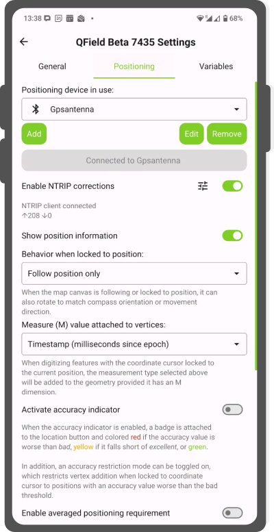
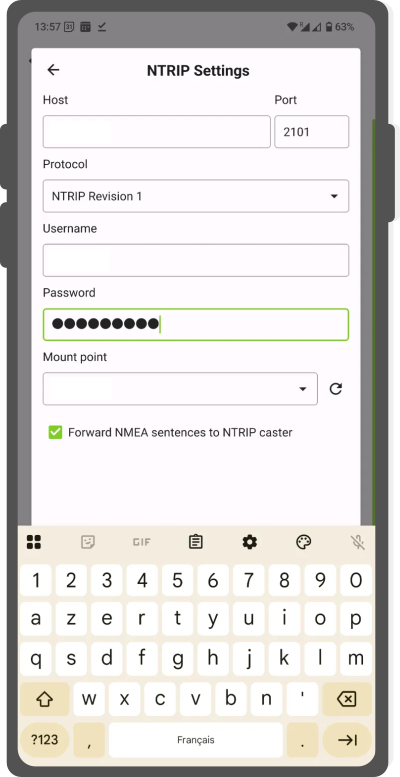
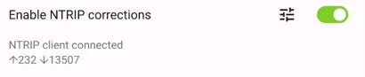
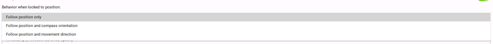
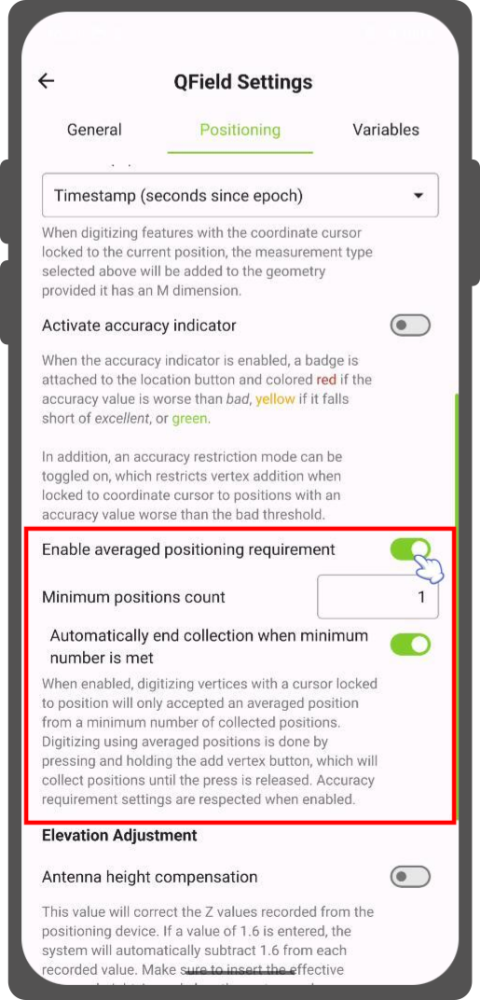

衛星測位 (GNSS)¶
QField is capable to show your live position using several sources:
- Either by using the internal GNSS (Global Navigation Satellite System, like GPS, GLONASS, Galileo or Beidou) of your mobile device (typically 5 m accuracy) or
- Through an external antenna through NMEA streams over Bluetooth, TCP, or UDP connection. (typically 1.5 m accuracy) or
- Through an external antenna connected to an additional NTRIP service (down to cm accuracy)
Tip
Depending on your technical domain, it is advisable to make use of an external antenna, given that the known limitation of a mobile device is around 5 meters. Furthermore, an external antenna is also able to measure the altitude next to the current 2D position on the earth surface.
Note
QField requires external GNSS devices to output their position in EPSG:4326. Support for customized CRSes is not possible. This may lead to displacements of your data, if you are not careful.
可視化¶
When positioning is enabled, your position will be shown in blue on the map. Your location is represented by a blue dot when you are not moving and by an arrow indicating your movement direction if you are moving.
The blue beam indicates the current orientation of your device if the device has a builtin magnetic compass.
A shaded circle around your current position indicates the precision as reported by the GPS in use.
構成¶
QFieldの設定の測位タブでは以下の設定が可能です。
Workflow
- Open the side dashboard and click on the 3-dotted menu
- Tap on settings and switch to the Positioning tab
Enable NTRIP Corrections¶
If you have access to an RTK Service, QField can act as a RTK Client if you add the essential information under the settings.
Workflow
Connect to external GPS Device
- Enable bluetooth and connect to your external GPS Device
- In QField connect to that antenna by adding it to your selection of positioning devices
- Once connected, toggle the switch

- Click on the settings button next to the switch and add your NTRIP Service information

NTRIP Settings - Once added click on the arrow and ensure that the NTRIP correction is working as expected (indicated by incoming and outgoing arrows)

RTK connected
{kind=link}
{kind=link}
{kind=link}
NOTE: If you enable your position information in the settings you can see the established connection.
Show position information¶
You can lock the crosshair to your position (meaning you will record a point or vertex exactly at your location). Depending on your preference you may choose between three different behaviours as indicated below:

{kind=link}
- Follow position only: The map canvas will stay as it is
- Follow position and compass orientation: The map canvas will rotate in such a way that your compass always points towards the top of your screen
- Follow position and your movement direction: The map will always rotate in the way of your movement direction
Workflow
- Turn on your positioning
- Tap on the crosshair to follow your position
計測（M）値¶
When digitizing a geometry onto a vector layer that contains an M dimension, QField will add a measurement value to individual vertices whenever the coordinate cursor is locked to the current position.
By default, the value will represent the captured position's timestamp (milliseconds since epoch). You can change this value using the combo box in the settings' positioning tab.
The available values to chose from are.
- timestamp
- ground speed
- bearing
- horizontal and vertical accuracy
- PDOP, HDOP and VDOP
高精度測位に必要なこと¶
A minimum desired accuracy for measurements can be defined. The quality will be reported in three classes, bad (red), ok (yellow) and excellent (green). These colors will show up as a dot on top of the GNSS button.
{kind=link}
しきい値は、設定の測位タブで定義できます。
Note
If the Enable accuracy requirement setting is activated, you will not be able to collect new measurements with the coordinate cursor locked to the current position with an accuracy value which is bad (red).
アンテナの高さ補正¶
使用するアンテナポールの高さは、設定で定義できます。測位された高度は、この値で補正されます
高度補正／垂直方向のグリッドシフト¶
Altitude values can be corrected with vertical grid shift files to calculate orthometric height.
Vertical grid shift files have to be made available to QField by putting them into the QField app folder [App Directory]/QField/proj.
Once the grid shift file is placed there, it is available in QField in the Positioning settings under Vertical grid shift in use.
If you are using altitude correction and an external positioning device is used, consider turning Use orthometric altitude from device off.
現在サポートされているフォーマットは以下の通り：
- GeoTIFF (.tif, .tiff)
- NOAA Vertical Datum (.gtx)
- NTv2 Datum Grid Shift (.gsb)
- Natural Resources Canada's Geoid (.byn)
Workflow
Example: Netherlands - ETRS89 to NAP
For transformations involving the Dutch NAP (Normaal Amsterdams Peil) vertical datum, you'll need the official grid file from NSGI.
- Download the file: Get
nlgeo2018.gtxdirectly from the NSGI website. - Place the downloaded
.gtxfile into the directory [App Directory]/QField/proj. This is independent of whether you are using QFieldCloud or not.
Example: Switzerland - CH1903+/LV95
To get precise altitude data for Cadastral Surveying in Switzerland (LV95), you must use the geoid correction grid from Swisstopo.
The official file comes in an .agr format and must be converted to .gtx (NTv2 Grid Shift File) before it can be used.
Other raster formats like (.tiff) can also be used.
- Download the "Geoid OGD" dataset from Swisstopo under the following link Download Link: Geoid OGD from Swisstopo.
- Unzip the archive to retrieve the file:
chgeo2004_htrans_LV95.agr. -
Convert the file using the using the gdal_translate algorithm with one of the following options:
Method 1: QGIS Graphical User Interface (GUI)
- In QGIS, open the Processing Toolbox panel.
- Navigate to GDAL > Raster conversion > Translate (Convert format) tool.
- Configure it with your needed requirements:
- Input layer: Select your
chgeo2004_htrans_LV95.agrfile. - Output file: Click "Save to File..." and name your output file with a
.gtxextension (or other format needed), for example,chgeo2004_htrans_LV95.gtx.
- Input layer: Select your
- Click Run. The other default settings are typically sufficient for this conversion.
Method 2: Command Line (
qgis_process)For automation or users who prefer the command line,
qgis_processis a great option.- Open your terminal and run the following command, adjusting the paths to your files.
qgis_process run gdal:translate --INPUT="/path/to/your/chgeo2004_htrans_LV95.agr" --OUTPUT="/path/to/your/chgeo2004_htrans_LV95.gtx"
Method 3: PyQGIS Script
You can also perform the conversion programmatically within the QGIS Python Console or a standalone script.
import processing input_grid = '/path/to/your/chgeo2004_htrans_LV95.agr' output_grid = '/path/to/your/chgeo2004_htrans_LV95.gtx' processing.run("gdal:translate", { 'INPUT': input_grid, 'OUTPUT': output_grid }) print(f"Successfully converted grid to: {output_grid}")
{kind=link}
Fieldwork
-
Copy the
chgeo2004_htrans_LV95.gtxfile to the directory [App Directory]/QField/proj on your mobile device. -
Open the Site Dashboard
-
Tap on the 3-dotted menu (⋮) and direct to Settings > Positioning
-
Enable your GNSS device. It will directly center to your current location once the positioning information is available.
-
Change to edit mode and press on the target button - the cross in the center means it is using GNSS positioning.
A long press on the GNSS button will show the positioning menu. Inside the menu you can turn on the Show position information which will show the current coordinates that are reprojected into the CRS of your project along with the precision information.
{kind=link}

Note
If you see WGS 84 lat/lon information instead of information in your project CRS, you probably have no signal yet.
測位に使用する変数¶
You can get the positioning information both of your internal and external device by specifically configuring your attribute form.
These variables are commonly used as part of default values expressions for fields to keep track of the quality of individual measured points.
A common use case is recording the horizontal accuracy, which can be done by using the variable @position_horizontal_accuracy.
For a complete listing of all available variables, refer to the expression variables reference documentation.
垂直グリッドシフトを使用したGNSS Z値の情報： - アンテナの高さ補正=False
| 使用中の垂直グリッドシフト | ポイントZ の値z(ジオメトリ) | GNSSデバイス z(@position_coordinate) | QFieldのディスプレイ | QFieldのラベル |
|---|---|---|---|---|
| なし | Z楕円体のデバイス値 | Z楕円体のデバイス値 | Z楕円体のデバイス値 | 高度: xxx.xxxx m |
| デバイスからの正射投影 | Z正射投影のデバイス値 | Z正射投影のデバイス値 | Z正射投影のデバイス値 | 高度: xxx.xxxx m (オルソ) |
| USER_Shift_Grid.GTX 垂直グリッドシフト |
Zシフトグリッド値 | Z楕円体のデバイス値 | Zシフトグリッド値 | 高度: xxx.xxxx m (グリッド) |
Capturing longitude, latitude and altitude in attribute form¶
It is useful and not uncommon that the actual positioning values should be automatically stored inside the attribute form. This applies for longitude, latitude and altitude.
Workflow
Configuration of attribute form
- In QGIS direct to your Layer Properties > Attribute Form
- (Optional): You have to add a field of decimal type to the form that can capture the data. Name it accordingly (eg. "longitude")
-
Under the settings of the widget display of the corresponding field add the following default value:
- Longitude:
x(@position_coordinate) - Latitude:
y(@position_coordinate) - Altitude:
z(@position_coordinate)
- Longitude:
This will save the coordinate directly in the field when adding a new feature.
Note
This only works if positioning is turned on and when you have locked your position to your crosshair.
Vertex log layer¶
It is good practice to create a log layer of the collected vertices. It enables you to keep track of the meta data for each vertex like GNSS quality attributes and more.
Workflow
- Add a point layer to the project and attributes configured to store this information.

- Assign the role digitizing logger to a point layer.
- Go to > Project > Properties... > QField.

- Set default values to the attributes using the positioning variables mentioned above.
外付けのGNSS受信機を使用する¶
フィールドマーク
QFieldは、Bluetooth、TCP、またはUDP接続によるNMEAストリームを介して、外部のGNSS測位機器との接続をサポートしています。
Under the Positioning section, you are able to manage and switch between your internal and saved external GNSS devices.

プラットフォーム別の接続サポートの内訳は以下の通り：
| Android | iOS | Windows | Linux | MacOS | |
|---|---|---|---|---|---|
| Bluetooth | |||||
| TCP | |||||
| UDP | |||||
| シリアルポート |
(*) WindowsでのBluetoothサポートは、GNSSデバイスに接続する際にオペレーティングシステムが自動的に作成する仮想シリアルポートを介して行われます。
現在サポートされているNMEAセンテンスは、GGA、RMC、GSA、GSV、GST、VTG、HDTです。
備考
モック位置情報プロバイダーのような他のアプリが同じ接続を使用していないことを確認してください。
外部受信機ログ¶
If you have selected an external receiver as the positioning device, you will find a switch Log NMEA sentences from device to file.
If this is activated, all NMEA sentences coming from external positioning devices will be logged to a file.
The logs will be placed in [App Directory]/QField/logs.

備考
ログが常にオンになっていると、ストレージがいっぱいになってしまうので注意してください。
擬似ロケーション¶
フィールドマーク
QFieldに、別のアンドロイド・アプリを経由して、擬似ロケーションを提供することが可能です。これにはいくつかのオプションがあり、そのひとつがAndroid NTRIP Clientです。
これを行うには アンドロイド端末で疑似ロケーションを有効にする必要があります。
平均測位機能¶
フィールドマーク
Note
The coordinate cursor must be locked to the current location via the Lock to position button
平均化された座標を使ってデジタル化する機能があります。
頂点追加ボタンを押し続けると、座標の収集が開始されます。
During the collection, an indicator will appear on top of the coordinate cursor showing the number number of the collected positions. If an averaged position minimum count requirement is active, a progress bar will also be present indicating the progress towards meeting that requirement.
- To activate direct to side "Dashboard" > Settings > Positioning
- Shortly tap where you want to collect points and QField will automatically add the averaged position once the minimum count is met.

{kind=link}
Note
When using @gnss_* or @position_ variables on averaged positions, the variable will also represent the average over all collected samples.